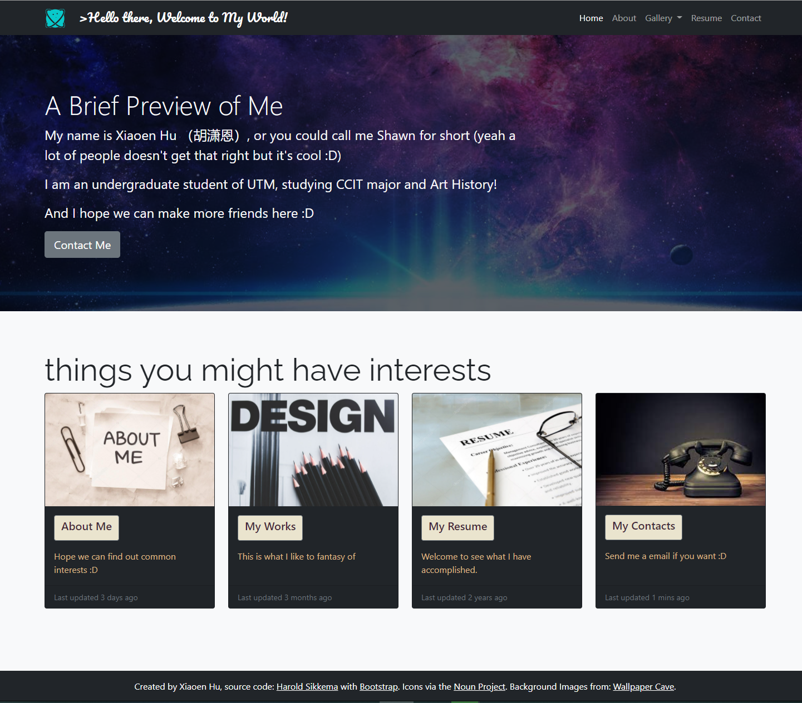
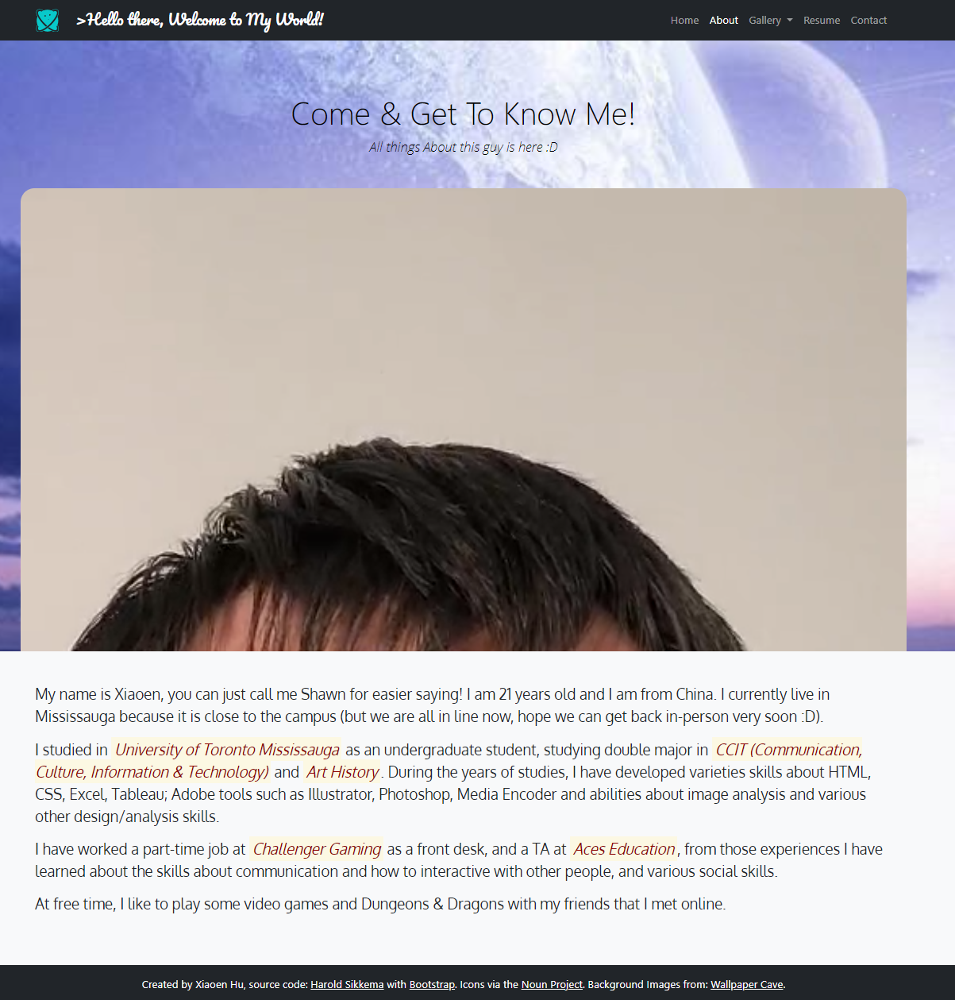
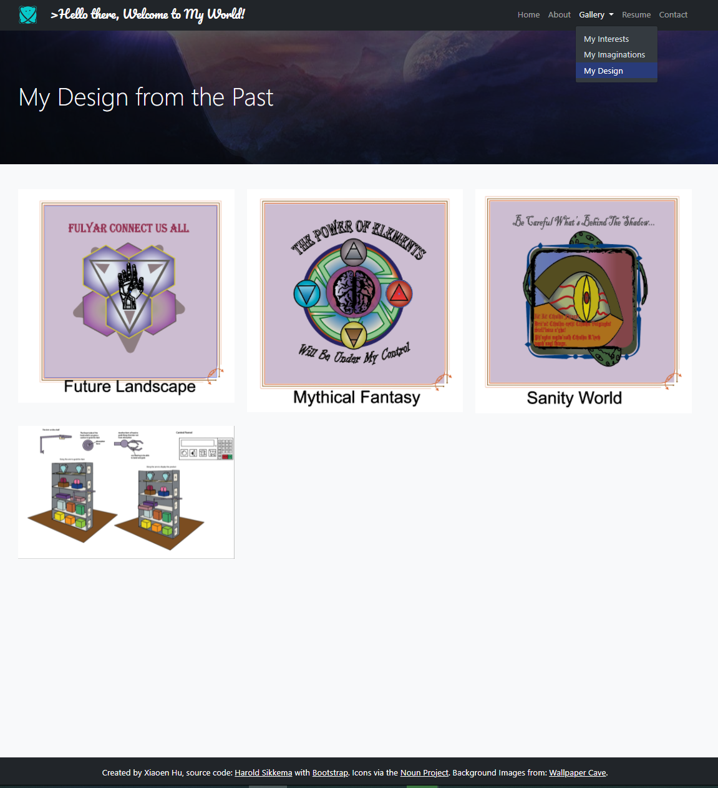
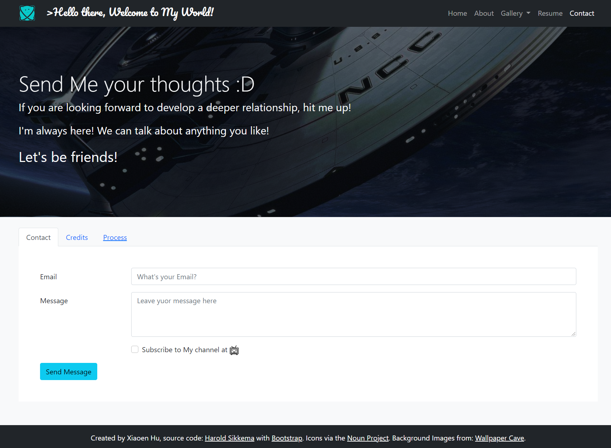
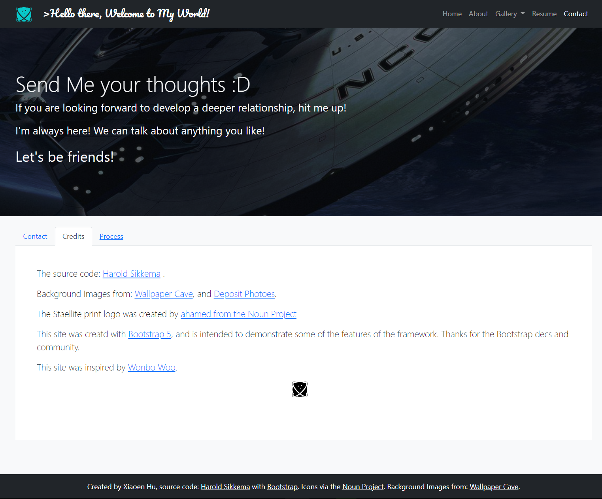

This page is for explain the process
The main color/design are based on the Professor's bootstrap labs and the Wonbo Woo's personal website, but I added some personal twist on it.
First I changed the color to black to fit in to the the scheme i choose: galaxy/space.
The icon is set into a cute planet like creature and the colour setin cyan-like to make it more welcoming and emerge into the main theme.
On the header, the line "Hello there,..." is in a very fancy and curly font, this is to attractive the audiences' eye-sight when they first glanced it.
On the main page, the page has been developed in to two parts, first will be the header, the greeting section, which paired with a galaxy-fantasy background image with a dark tone, to set the colour theme of the whole project.
On the botton, there are 4 cards that have a dark background and gold (burlywood actuallym but I like to call it gold XD) to make this section look more high-end.
Each card has their own image, and a line of deciption, and in each card there is a button that will lead the audience to the page it linked.
The background image of About page is lighter, it is to bring a happier feeling to the user, to make the main character (me) look more vigorous and make this page more welcoming.
At the top of the page I made a constant playing funy video do more welcoming to the audiences.
The About page is mainly text, to introduce myself as a student and my experiences and skills.
At the top navigation bar there is a drop down menu at Gallery page, and the dark blue highlight is to remind the user which page they are on.
This page is to show my past designs for another course and when you click on the image there will be a carousel thta pops up.
This page is for the viewers to send my emails (not really) if they are interested of my work or about me.
The little icon at the end of the check box is a link to a website that I uploaded my DND campaigns (but it is a Chinese website called BiliBili).
That button of the botton continusly uses the same colour theme, make things constant.
This credit page is to credit all the source I used during this assignment.
